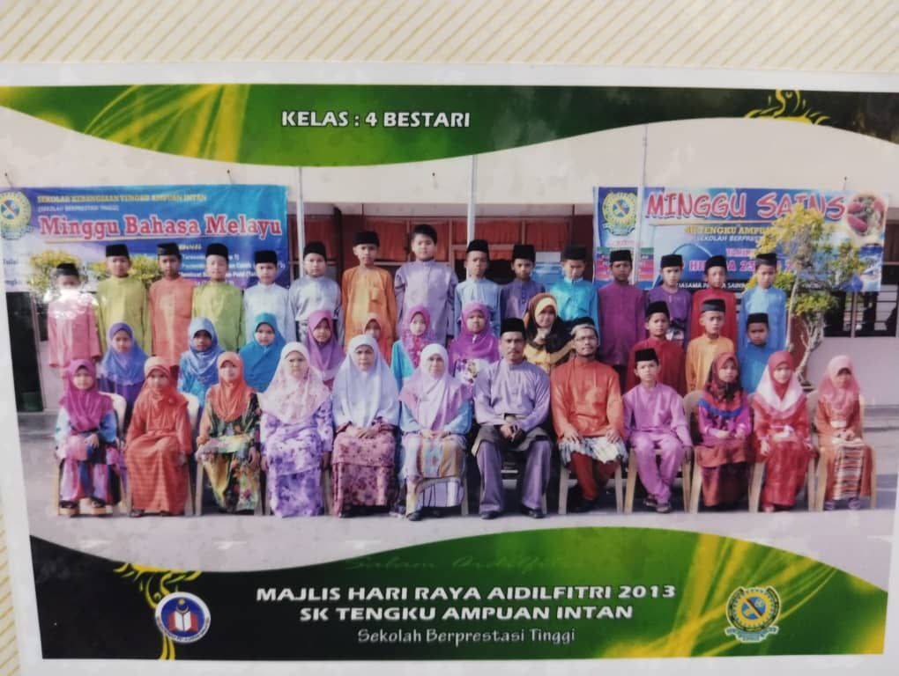

My Primary School!

I was schooled at SK Tengku Ampuan Intan. It is one of SBP school. This photo was taken during Raya celebration at school. I don't have many picture during my primary school. I was also a quite and shy student. I stay here for about 6 years before finally graduate after UPSR. It had lot bitter sweet memories during my primary school. It was something that I probably don't really remember. Let the past be the past.
I am indeed do not have lot of photos during primary school era back then I was not even liking to takes photo. I also do not have many friend because I still lack in communication, I do not know how to express myself through my voice or reaction. So they thought I was someone who is very cold and arragont.